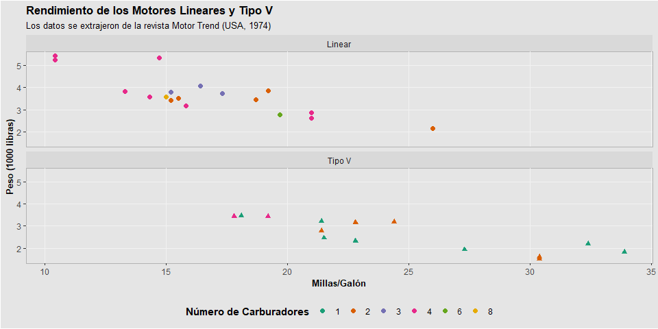
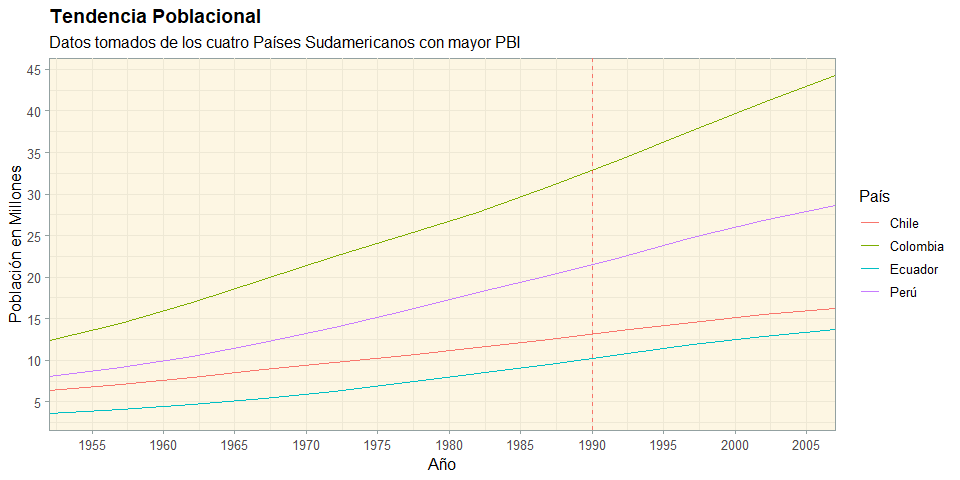
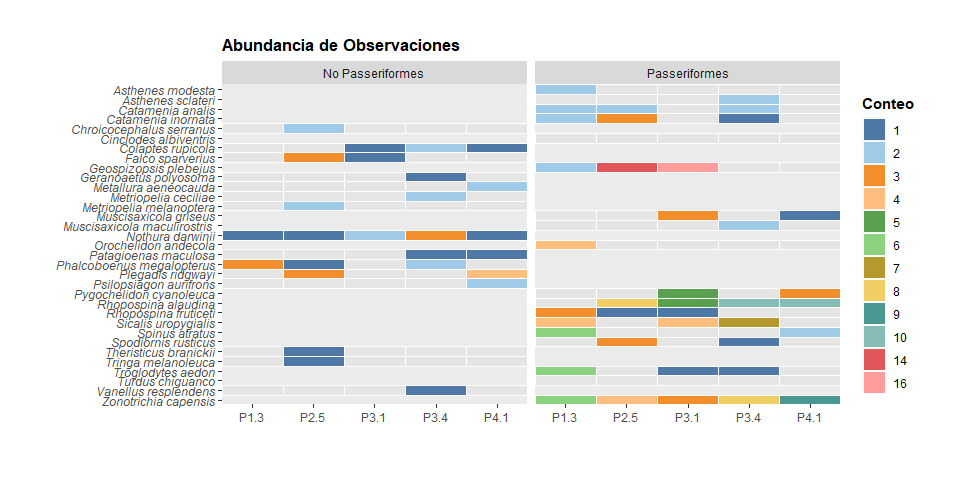

Link de la práctica desarrollada: Práctica de Casa 04 - Gráficos Avanzados con ggplot2 (irwingss.github.io)
Realiza los siguientes ejercicios durante tu tiempo libre para reforzar practicar las funciones adicionales y geoms que aprendiste durante la semana 7 y 8 del programa (Curso 3).
Recuerda realizar esta práctica luego de haber desarrollado:
R-Notebook-C3-S1 parte 1.Rmd
R-Notebook-C3-S1 parte 2.Rmd
R-Notebook-C3-S2.Rmd
Nota 1: Si necesitas crear un code chunk los atajos en el teclado son en WINDOWS:
Crtl+Alt+i, y en MAC:Command+Alt+i.
Activa las librarías a usar
library(tidyverse)
library(viridis)
library(ggthemes)
library(ggThemeAssist)
library(ggrepel)
library(patchwork)
library(ggstatsplot)
library(gapminder)Carga la base de datos mtcars para realizar el siguiente gráfico (click aquí para verlo). Puedes intentar hacerlo todo desde cero por ti mismo como un reto personal (no obstante, revisa el punto 6, 7y 8 porque es información nueva y específica), pero si aún no te sientes muy familiarizado con ggplot2, solo sigue las instrucciones brindadas a continuación:
Crea un gráfico de dispersión de puntos entre las millas por galón (columna mpg) y el peso (columna wt) de la base de datos mtcars.
Colorea por la cantidad de carburadores que presenta el auto (columna carb). La base de datos lee todas las columnas como valores continuos. Asegúrate de convertir a factor la columna de trabajo para que genere el gráfico con colores discretos.
Define la forma de los puntos en base al tipo de motor (columna vs)
Adiciona las etiquetas de
Título:“Rendimiento de los Motores Lineares y Tipo V”
Subtítulo: “Los datos se extrajeron de la revista Motor Trend (USA, 1974)”
Eje x: “Millas/Galón”
Eje y: “Peso (1000 libras)”
Leyenda para el color: “Número de Carburadores”
Usa la paleta de colores "Dark2" para colorear los puntos
Usa la faceta facet_wrap() para dividir el gráfico en base al tipo de motor (columna vs). Debes asegurarte que la columna sea un factor para que pueda graficar. Además, debes reemplazar el valor 0 por el nombre "Tipo V" y el valor 1 por "Linear". Dentro de la función de faceta puedes definir el número de filas en las que dividirá el gráfico, coloca el argumento nrow=2 para que genere las facetas en dos filas.
Usemos theme() para indicar la ubicación de la leyenda en la parte inferior del gráfico. El argumento que hace esto es legend.position = "bottom". Las posiciones que admite son "top" arriba, "bottom" abajo, "left" izquierda, "rigth" derecha.
Usa una nueva función adicional llamada guides() que permite modificar algunas cosas la leyenda. En este punto, tu gráfico debe tener dos leyendas. Si deseamos eliminar alguna leyenda que no nos es útil (como la de la forma de los puntos, dado que ya aplicamos facetas separándolos), escribimos el tipo de origen de la leyenda (el argumento de aes() que la genera) y le indicamos FALSE para que desaparezca así: guides(shape=FALSE).
El objetivo es poner la leyenda en la parte inferior de la gráfica, y en una sola fila. Esto lograremos indicando dentro de guides() el argumento de aes() que la genera el color (que define al número de carburadores) tenga el valor guide_legend(nrow = 1), así : color=guide_legend(nrow = 1). Significa que forzamos a que la leyenda de color ponga sus valores en una sola línea.
Selecciona el código del gráfico por completo, y abre Addins/ggplot Theme Assistant para que veas el asistente de graficación y termines con ello de modificar el gráfico:
Colorea las líneas mayores del panel con el color gray95.
Elimina las líneas menores del panel colocandole el tipo blank para que no se muestren.
Coloca el rellenado de fondo (Background) del plot como gray90.
Coloca el rellenado del panel como gray90.
Coloca el color del borde del panel como gray70.
Coloca el título del Plot en negrita bold y tamaño de letra 13.
Coloca el subtítulo del Plot en tamaño de letra 10.
Coloca el título de los ejes (axis) en negrita bold y tamaño de letra 10.
Coloca el título de la leyenda en negrita bold.
Coloca el color del fondo (background) de la leyenda en None para que desaparezca el color.
Coloca el color del fondo de las claves (key) de la leyenda en None para que desaparezca el color.
Adicional: si deseas aumentar el margen del plot cuando lo exportes y que tenga más espacio a los costados, arriba y abajo, usa el argumento dentro de theme() que modifica los márgenes: plot.margin = unit(c(1,1,1,1),"cm"). Esto deberás hacerlo manualmente. Así obtendrás exactamente la misma figura que la presentada aquí en el ejercicio.
data("mtcars")
mtcars %>%
ggplot(aes(x=mpg, y=wt, color=factor(carb),shape=factor(vs)))+
geom_point(size=2)+
labs(x="Millas/Galón", y="Peso (1000 libras)", color="Número de Carburadores",
title="Rendimiento de los Motores Lineares y Tipo V",
subtitle="Los datos se extrajeron de la revista Motor Trend (USA, 1974)")+
scale_color_brewer(palette = "Dark2")+
facet_wrap(~factor(vs, labels=c("1"="Linear", "0"="Tipo V")), nrow = 2)+
theme(legend.position = "bottom")+
guides(shape=FALSE, color = guide_legend(nrow = 1)) +
theme(panel.grid.major = element_line(colour = "gray95"),
panel.grid.minor = element_line(linetype = "blank"),
plot.background = element_rect(fill = "gray90"),
panel.background = element_rect(fill = "gray90",
colour = "gray70", linetype = "solid"),
plot.title = element_text(size = 13, face = "bold"),
plot.subtitle = element_text(size = 10),
axis.title = element_text(size = 10, face = "bold"),
legend.title = element_text(face = "bold"),
legend.key = element_rect(fill = NA),
legend.background = element_rect(fill = NA))
En este ejercicio aprenderás que la posición de theme_XYZ() y theme() importa. Si colocamos primero theme() y luego theme_XYZ(), no importa cuántas modificaciones se hayan realizado con theme(), todo será reemplazado con las modificaciones predefinidas del theme_XYZ() que escogiste. No obstante, al hacerlo al revés, primero theme_XYZ() y luego theme(), primero modificamos todo con un tema predefinido, y luego realizamos modificaciones con theme() sobre el theme_XYZ() para dejar lo que nos guste pero modificar aquello que no deseamos. Recuerda que theme_XYZ() es un ejemplo que puede ser reemplazado con cualquier tema predefinido de ggplot o ggthemes.
Carga la base de datos gapminder para realizar el siguiente gráfico (click aquí para verlo). Puedes intentar hacerlo todo desde cero por ti mismo como un reto personal, pero si aún no te sientes muy familiarizado con ggplot2, solo sigue las instrucciones brindadas a continuación. Sin embargo las instrucciones demandan que recuerdes el uso de ciertas funciones de ggplot2:
year), y como eje y el tamaño poblacional (pop) didivido entre 1 millón para expresar ese eje en millones. Colorea por el país (country)."Set2" con una función que te permita colocar paletas (colores discretos)theme_solarized(). Del cual mantendremos casi todo. Las modificaciones que haremos se realizarán seguido dentro de theme().ggThemeAssist elimina el color de fondo de la leyenda, o cólocalo como blanco. Cambia la face del título de plain (texto plano) a bold (negritas).theme() y theme_solarized() para que veas la influencia del orden.theme_solarized() y luego theme().ggThemeAssist. Escribe los argumentos dentro de theme(): para modificar todo el texto del gráfico (de la leyenda y de los ejes) text =, y para modificar todos los títulos (del plot y de los ejes) title =. Como ambos son elementos de texto, debes escribir: text=element_text(), title=element_text().color="black". Resultado: text = element_text(color="black"), title = element_text(color="black").data(gapminder)
gapminder %>% filter(country%in%c("Peru","Colombia","Chile","Ecuador")) %>%
ggplot(aes(x=year, y=(pop/1000000), color=country))+
geom_line()+
geom_vline(xintercept=1990,color="red", lty=2, lwd=0.6, alpha=0.5)+
scale_x_continuous(breaks = seq(1950,2010,5), expand=c(0,0))+
scale_y_continuous(breaks = seq(0,50,5))+
scale_color_brewer(palette = "Set2")+
scale_color_discrete(labels=c("Peru"="Perú"))+
labs(x="Año",y="Población en Millones", color="País",
title = "Tendencia Poblacional",
subtitle = "Datos tomados de los cuatro Países Sudamericanos con mayor PBI")+
theme_solarized()+
theme(legend.background = element_rect(fill = NA),
plot.background = element_blank(),
plot.title = element_text(face=2),
text = element_text(color="black"),
title = element_text(color="black"))## Scale for 'colour' is already present. Adding another scale for 'colour',
## which will replace the existing scale.
Carga la base de datos dat usando el siguiente código para obtenerla desde Drive Google y realizar el siguiente gráfico (click aquí para verlo).
id <- "1Ir5XteDKcStjsUlnMXuYKI6s2Qscmgy-"
dat <- read.csv(sprintf("https://docs.google.com/uc?id=%s&export=download", id))Puedes intentar hacerlo todo desde cero por ti mismo como un reto personal, pero si aún no te sientes muy familiarizado con ggplot2, solo sigue las instrucciones brindadas a continuación. Sin embargo las instrucciones demandan que recuerdes el uso de ciertas funciones de ggplot2:
Dado que en ggplot solo puedes colocar una columna en el eje x, una en el eje y, y una como relleno, la tabla actual no nos es útil. Debemos convertirla en tabla larga con la función gather() de la librería dplyr. Apila las columnas 3 a la 7.
Seguido, usa mutate para convertir los valores 0 a NA con la función ifelse(). Esto es necesario porque un argumento dentro de las funciones de coloreo/rellenado permite colocar un color a los valores NA. Por ejemplo: na.value = "grey90", hará que los NA sean celdas grises muy claro en el gráfico. Esto lo usaremos más adelante.
Crea el ggplot() definiendo como aestéticas x= forcats::fct_rev(categoria). Esto implica usar la función fct_rev() de la librería forcats. Para entender mejor: fct_rev() significa factor reverse para invertir el orden de un factor. La siguiente aestética debe ser el eje y conteniendo las etiquetas apiladas por gather() con el nombre key. Por último usa value2 para rellenar, pero convirtiéndolo en un factor para generar rellenado discreto.
Coloca la geométrica respectiva para hacer tiles, indicando color "white" para que tenga bordes blancos y size = 0.2 para hacer las líneas de borde más sutiles.
Gira el gráfico para que el eje y tenga los valores de la columna categoria.
Coloca los títulos del gráfico y ejes como corresponda.
Usa la función de rellenado de ggthemes para rellenar con la paleta "Tableau 20". Adiciona el argumento na.value = "grey90" para que los NA se rellenen con gris claro, y el argumento: breaks=c(1:10,14,16) para que las leyendas de rellenado contengan todos los valores de conteo de cada tile pero sin menciona al NA.
Usa ggThemeAssist para definir:
El título del plot en negrita tamaño 13.
Los grid mayores y menores del panel gráfico como None o element_blank() para que desaparezcan.
Poner el título de la leyenda en negritas.
Tamaño del texto del eje x en 9, y del eje y en 3.
Color del panel como None para que desaparezca el borde del panel.
Adicionalmente, puedes ponerle margenes al gráfico como vimos en el ejercicio anterior con el argumento plot.margin=unit(c(1,1,1,1),"cm").
Finalmente, puedes separar las observaciones adicionando una faceta para crear un gráfico para cada nivel de la columna factor1.
dat %>%
gather(key=key, value=value, 3:7) %>%
mutate(value2 = ifelse(value==0,NA,value)) %>%
ggplot(aes(x= forcats::fct_rev(categoria), y=key, fill=factor(value2)))+
geom_tile(color="white",size=0.2)+
coord_flip()+
labs(x="",y="",title="Abundancia de Observaciones",
fill="Conteo")+
scale_y_discrete(expand=c(0,0))+
scale_x_discrete(expand=c(0,0))+
ggthemes::scale_fill_tableau(palette = "Tableau 20", na.value = "grey90",
breaks=c(1:10,14,16))+
theme(plot.title=element_text(size=13, face="bold"),
panel.grid.major = element_blank(),
panel.grid.minor = element_blank(),
legend.title = element_text(face="bold"),
axis.text.x=element_text(size=9),
axis.text.y=element_text(face=3),
panel.border=element_blank(),
plot.margin=unit(c(1,1,1,1),"cm"))+
facet_grid(.~factor1)